02 / BUILD & TEST
Stair-Climbing Robot
Test. Fail. Understand.
A stair-climbing robot pushed beyond its working limit. Four test conditions. A design investigation shaped by what actually happened.
- Role
- Mechanical design and fabrication, in a team of three
- Context
- B.E. capstone at MJCET under Asst. Prof. Syed Adil, Aug 2023 – Jun 2024
- Tools
- SOLIDWORKS 2021, Arduino, belt-drive design, BOM and procurement, test and measurement
- Build
- 6061-T6 aluminum frame, four 300 RPM geared DC motors, four belt drives on eight pulleys, Arduino Uno with HC-05, 12 V 2200 mAh pack
- Output
- Four stair geometries tested at a fixed 10 in tread; the 10 in rise defeated it
- Skills
- SOLIDWORKS 2021
- Belt-drive design
- Statics analysis
- Arduino
- BOM and procurement
- Test and measurement
A tracked, belt-driven platform on a 6061-T6 aluminum frame: four belt drives, eight Ø60 mm pulleys with 10 mm grooves, four 300 rpm geared DC motors, Arduino Uno and HC-05 control. The belt system went through two profile iterations before the toothed profile was adopted.
We tested it past its working limit rather than stopping at the last success, recording speed and power draw at each stair rise.
| Stair rise | Speed | Power | Result |
|---|---|---|---|
| 4 in | 0.25 m/s | 60 W | Stable |
| 6 in | 0.20 m/s | 70 W | Stable |
| 8 in | 0.15 m/s | 85 W | Partially stable, slipping |
| 10 in | n/a | n/a | Failed to climb |
The team initially investigated motor sizing. The next analysis focused on traction and stability, alongside the drivetrain calculations, to understand the climbing limit.
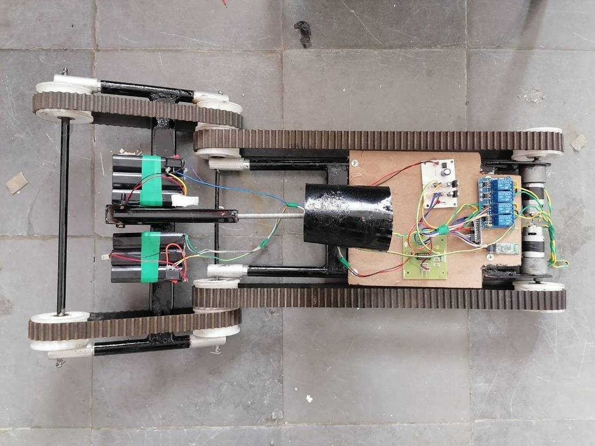
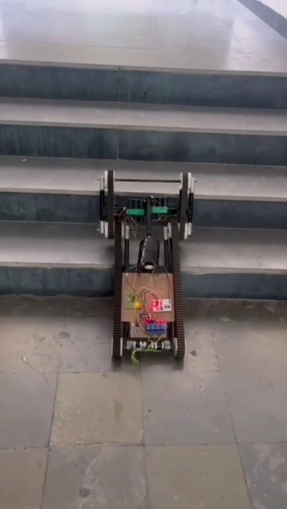
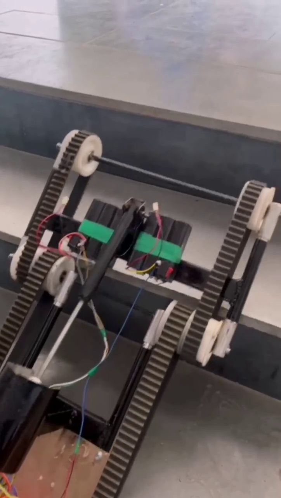
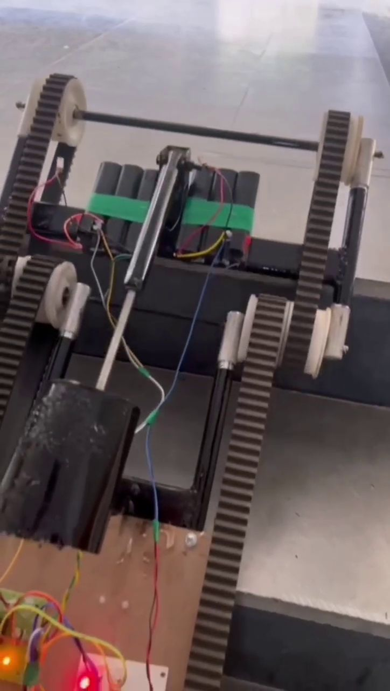
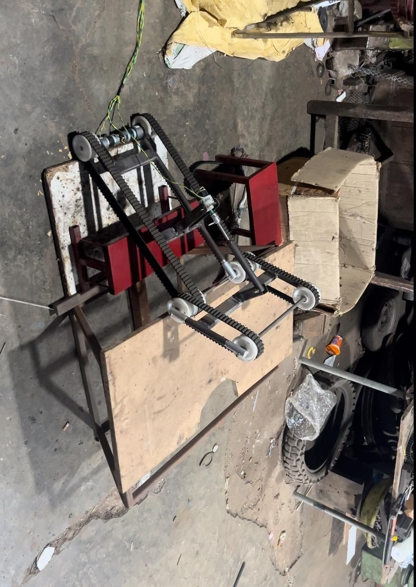
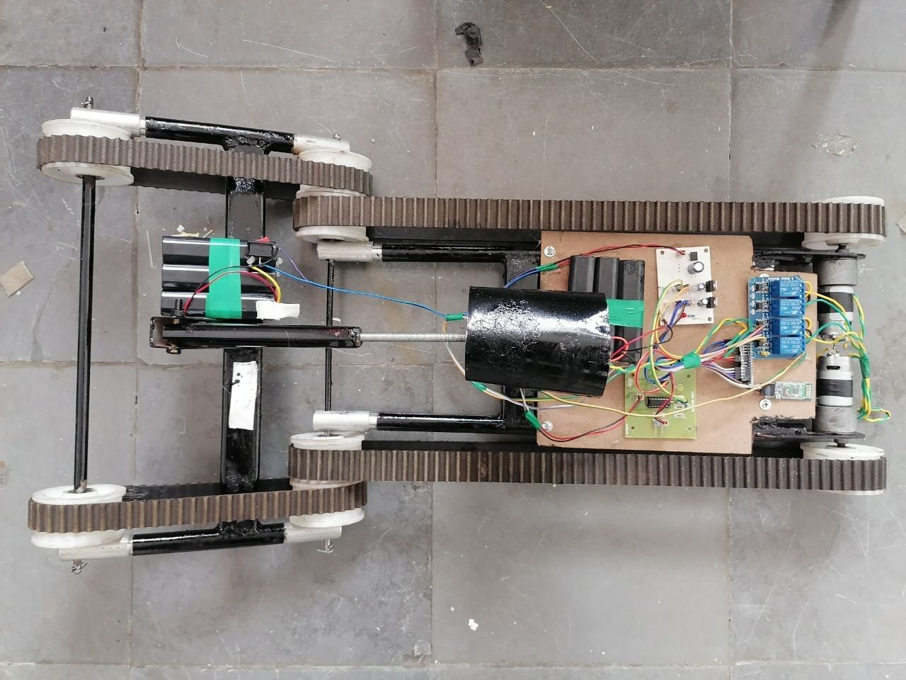
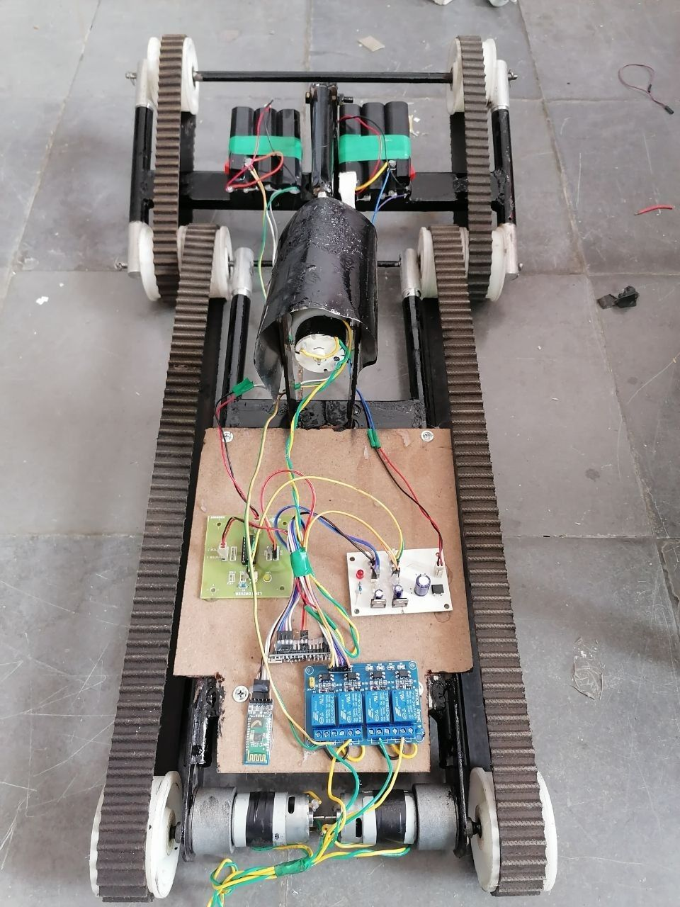
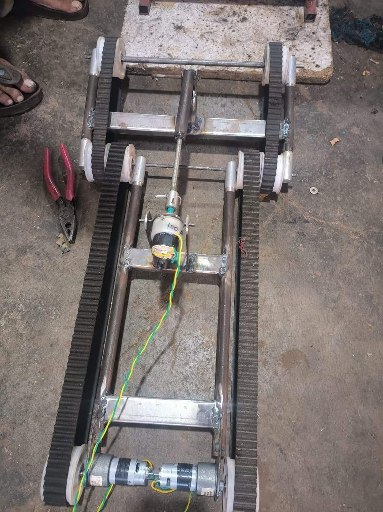
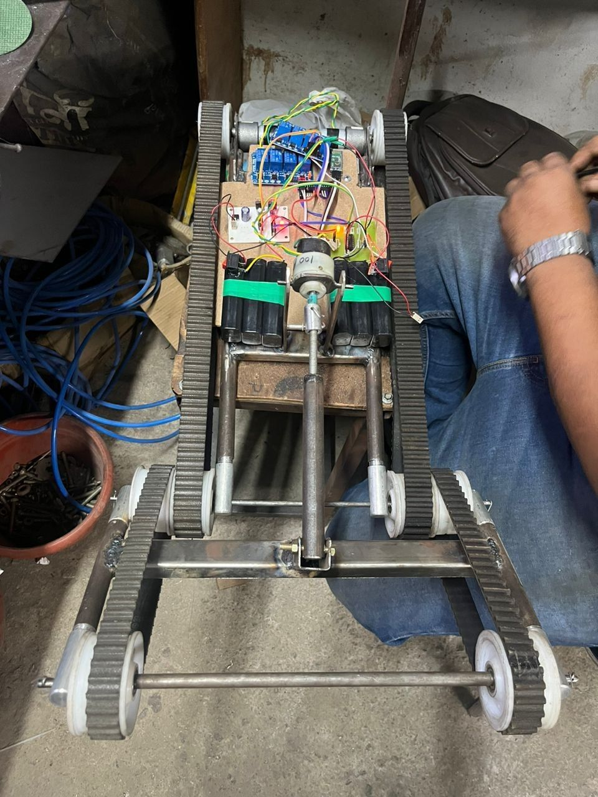
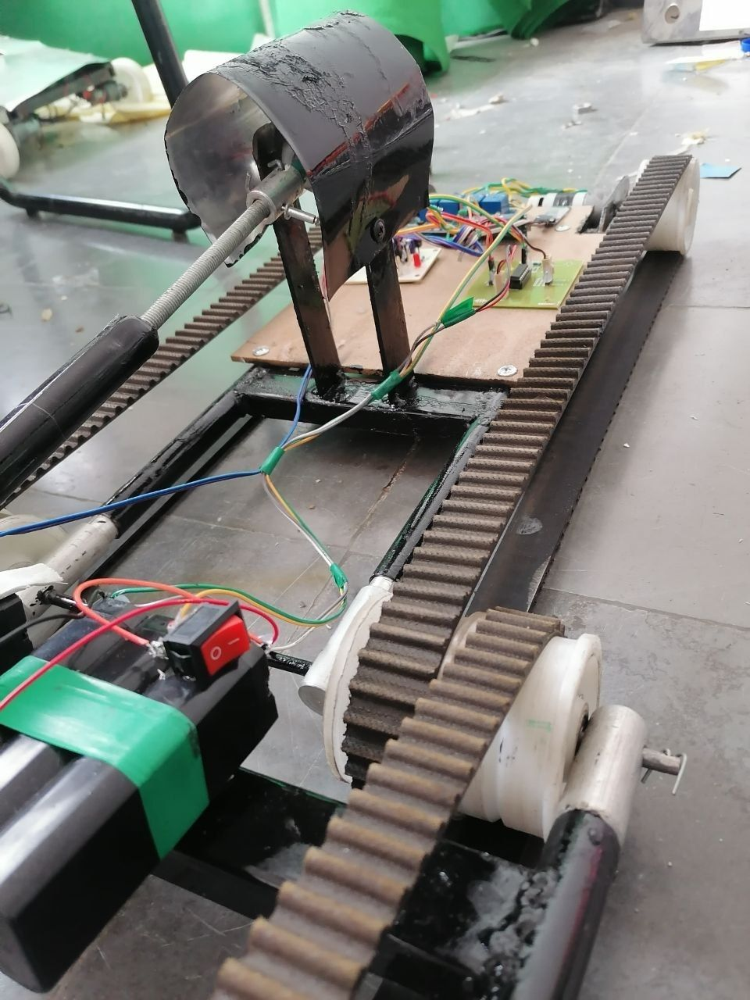
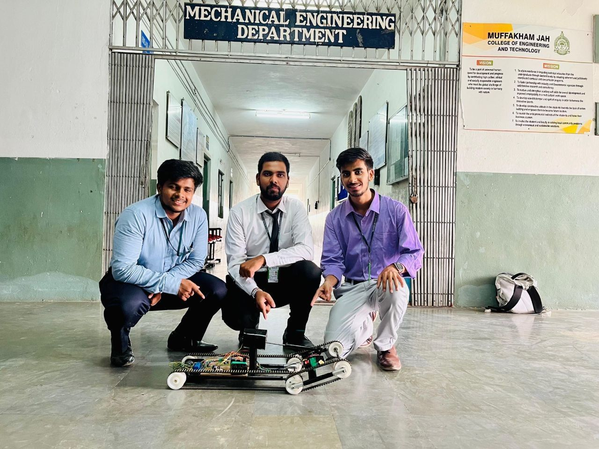
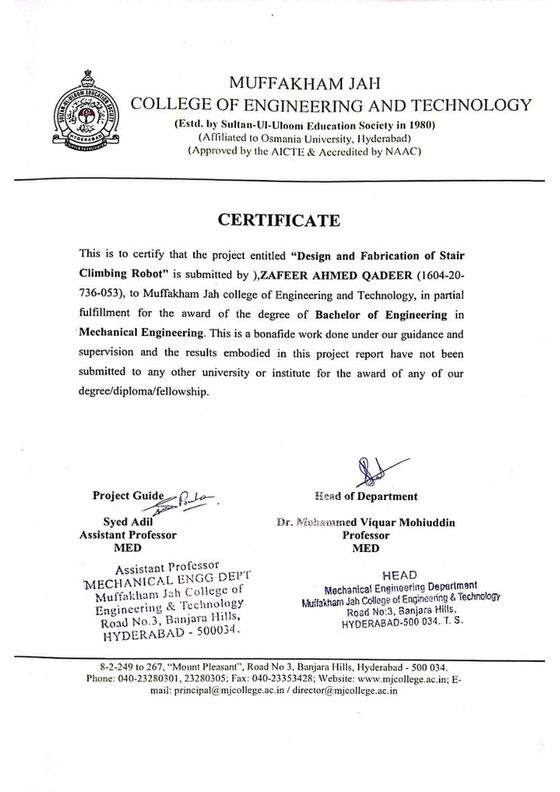
OPEN FULL SIZE ↗